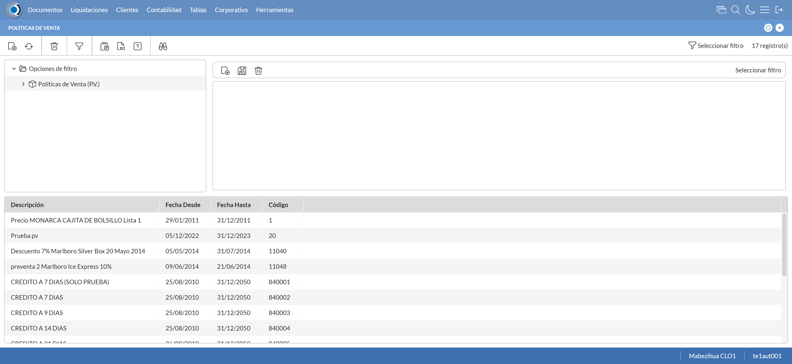

Desarrollado por : Area de Testing PWST
Fecha y hora de inicio : 2023-01-10 10:47:13
Duracion : 0:01:15.816636
Resultado : Total 8，Correctos 7 ，Errores 1 ，Taza de resultado 87.50%
Resumen 87.50% Errores 1 Fallidos 0 Correctos 7 Test realizados 8
| Caso de Prueba | Total | Correctos | Fallido | Error | Detalles | Captura del error |
| PoliticasVenta10.Test: Escenario 1 de Autorizaciones de Credito | 8 | 7 | 0 | 1 | Detalles | |
test |
ft1_1: 2023-01-10 10:47:14,484 - root - INFO - Se abre el chrome
2023-01-10 10:47:15,378 - root - INFO - Entra a la URL
2023-01-10 10:47:15,522 - root - INFO - Maximiza la pantalla
Traceback (most recent call last):
File "C:\Users\PWST\AppData\Local\Programs\Python\Python311\Lib\site-packages\selenium\webdriver\remote\switch_to.py", line 87, in frame
frame_reference = self._driver.find_element(By.ID, frame_reference)
^^^^^^^^^^^^^^^^^^^^^^^^^^^^^^^^^^^^^^^^^^^^^^^^^
File "C:\Users\PWST\AppData\Local\Programs\Python\Python311\Lib\site-packages\selenium\webdriver\remote\webdriver.py", line 856, in find_element
return self.execute(Command.FIND_ELEMENT, {
^^^^^^^^^^^^^^^^^^^^^^^^^^^^^^^^^^^^
File "C:\Users\PWST\AppData\Local\Programs\Python\Python311\Lib\site-packages\selenium\webdriver\remote\webdriver.py", line 429, in execute
self.error_handler.check_response(response)
File "C:\Users\PWST\AppData\Local\Programs\Python\Python311\Lib\site-packages\selenium\webdriver\remote\errorhandler.py", line 243, in check_response
raise exception_class(message, screen, stacktrace)
selenium.common.exceptions.NoSuchElementException: Message: no such element: Unable to locate element: {"method":"css selector","selector":"[id="mainFrame"]"}
(Session info: chrome=108.0.5359.125)
Stacktrace:
Backtrace:
Ordinal0 [0x0091ACD3+2075859]
Ordinal0 [0x008AEE61+1633889]
Ordinal0 [0x007AB7BD+571325]
Ordinal0 [0x007DAC2F+764975]
Ordinal0 [0x007DAE1B+765467]
Ordinal0 [0x0080D0F2+970994]
Ordinal0 [0x007F7364+881508]
Ordinal0 [0x0080B56A+963946]
Ordinal0 [0x007F7136+880950]
Ordinal0 [0x007CFEFD+720637]
Ordinal0 [0x007D0F3F+724799]
GetHandleVerifier [0x00BCEED2+2769538]
GetHandleVerifier [0x00BC0D95+2711877]
GetHandleVerifier [0x009AA03A+521194]
GetHandleVerifier [0x009A8DA0+516432]
Ordinal0 [0x008B682C+1665068]
Ordinal0 [0x008BB128+1683752]
Ordinal0 [0x008BB215+1683989]
Ordinal0 [0x008C6484+1729668]
BaseThreadInitThunk [0x75E100F9+25]
RtlGetAppContainerNamedObjectPath [0x77017BBE+286]
RtlGetAppContainerNamedObjectPath [0x77017B8E+238]
During handling of the above exception, another exception occurred:
Traceback (most recent call last):
File "C:\Users\PWST\AppData\Local\Programs\Python\Python311\Lib\site-packages\selenium\webdriver\remote\switch_to.py", line 90, in frame
frame_reference = self._driver.find_element(By.NAME, frame_reference)
^^^^^^^^^^^^^^^^^^^^^^^^^^^^^^^^^^^^^^^^^^^^^^^^^^^
File "C:\Users\PWST\AppData\Local\Programs\Python\Python311\Lib\site-packages\selenium\webdriver\remote\webdriver.py", line 856, in find_element
return self.execute(Command.FIND_ELEMENT, {
^^^^^^^^^^^^^^^^^^^^^^^^^^^^^^^^^^^^
File "C:\Users\PWST\AppData\Local\Programs\Python\Python311\Lib\site-packages\selenium\webdriver\remote\webdriver.py", line 429, in execute
self.error_handler.check_response(response)
File "C:\Users\PWST\AppData\Local\Programs\Python\Python311\Lib\site-packages\selenium\webdriver\remote\errorhandler.py", line 243, in check_response
raise exception_class(message, screen, stacktrace)
selenium.common.exceptions.NoSuchElementException: Message: no such element: Unable to locate element: {"method":"css selector","selector":"[name="mainFrame"]"}
(Session info: chrome=108.0.5359.125)
Stacktrace:
Backtrace:
Ordinal0 [0x0091ACD3+2075859]
Ordinal0 [0x008AEE61+1633889]
Ordinal0 [0x007AB7BD+571325]
Ordinal0 [0x007DAC2F+764975]
Ordinal0 [0x007DAE1B+765467]
Ordinal0 [0x0080D0F2+970994]
Ordinal0 [0x007F7364+881508]
Ordinal0 [0x0080B56A+963946]
Ordinal0 [0x007F7136+880950]
Ordinal0 [0x007CFEFD+720637]
Ordinal0 [0x007D0F3F+724799]
GetHandleVerifier [0x00BCEED2+2769538]
GetHandleVerifier [0x00BC0D95+2711877]
GetHandleVerifier [0x009AA03A+521194]
GetHandleVerifier [0x009A8DA0+516432]
Ordinal0 [0x008B682C+1665068]
Ordinal0 [0x008BB128+1683752]
Ordinal0 [0x008BB215+1683989]
Ordinal0 [0x008C6484+1729668]
BaseThreadInitThunk [0x75E100F9+25]
RtlGetAppContainerNamedObjectPath [0x77017BBE+286]
RtlGetAppContainerNamedObjectPath [0x77017B8E+238]
During handling of the above exception, another exception occurred:
Traceback (most recent call last):
File "C:\xampp\htdocs\Versiones\automatizaciones\AutoPWST\10PV\testCase\PoliticasVenta10.py", line 32, in test
self.driver.switch_to.frame("mainFrame")
File "C:\Users\PWST\AppData\Local\Programs\Python\Python311\Lib\site-packages\selenium\webdriver\remote\switch_to.py", line 92, in frame
raise NoSuchFrameException(frame_reference)
selenium.common.exceptions.NoSuchFrameException: Message: mainFrame
|
|
||||
test_000: Ingresa a la base de datos |
pt1_2: 2023-01-10 10:47:18,654 - root - INFO - Escribe el usuario
2023-01-10 10:47:18,756 - root - INFO - Escribe la contraseña
2023-01-10 10:47:18,849 - root - INFO - Se dio clic en el boton ingresar
2023-01-10 10:47:19,598 - root - INFO - Ejecutar Enterprise
2023-01-10 10:47:23,649 - root - INFO - Cambia entre pestañas
|
|
||||
test_001: Abre menu y ejecuta pantalla |
pt1_3: 2023-01-10 10:47:34,199 - root - INFO - Abre la pantalla de Politicas de Venta
2023-01-10 10:47:34,776 - root - INFO - La pantalla ejecutada es Politicas de Venta
2023-01-10 10:47:34,778 - root - INFO - Captura: C:\xampp\htdocs\Versiones\automatizaciones\AutoPWST\10PV\report\img screen：20230110_10_47_34.png
2023-01-10 10:47:45,931 - root - INFO - Se presiona el boton 'Nuevo', para crear un nuevo registro.
|
 | ||||
test_002: Abre la ventana de nuevo y crear un registro |
pt1_4: 2023-01-10 10:47:46,502 - root - INFO - Se abrio la pantalla para el ingreso de un registro nuevo.
2023-01-10 10:47:46,603 - root - INFO - El campo 'Codigo' si se encuentra visible.
2023-01-10 10:47:46,646 - root - INFO - El campo 'Codigo Alternativo' si se encuentra visible.
2023-01-10 10:47:46,687 - root - INFO - El campo 'Descrición' si se encuentra visible.
2023-01-10 10:47:46,727 - root - INFO - El campo 'Tipo de Documento' si se encuentra visible.
2023-01-10 10:47:46,782 - root - INFO - El campo 'Moneda' si se encuentra visible.
2023-01-10 10:47:46,825 - root - INFO - El campo 'Aplicable en' si se encuentra visible.
2023-01-10 10:47:46,866 - root - INFO - El campo 'Activa' si se encuentra visible.
2023-01-10 10:47:46,913 - root - INFO - El campo 'Aplicación Global' si se encuentra visible.
2023-01-10 10:47:46,994 - root - INFO - Ingresa el codigo del nuevo registro
2023-01-10 10:47:47,113 - root - INFO - Ingresa el codigo alternativo del nuevo registro
2023-01-10 10:47:47,315 - root - INFO - Ingresa la descripción del nuevo registro
2023-01-10 10:47:47,452 - root - INFO - Ingresa el tipo de documento del nuevo registro
2023-01-10 10:47:48,737 - root - INFO - Se dió doble click en el registro de Moneda.
2023-01-10 10:47:51,210 - root - INFO - Se dió click en la opción BackOffice y Mobile.
2023-01-10 10:47:51,308 - root - INFO - Se dió click en el checkbox Activa
2023-01-10 10:47:51,396 - root - INFO - Se dió click en el checkbox Aplicación Global.
2023-01-10 10:47:51,506 - root - INFO - Se hace el cambio a la pestaña Por Articulo para continuar con el registro nuevo
2023-01-10 10:47:52,110 - root - INFO - Se presiona el boton 'Nuevo', para crear un nuevo registro de Por Articulo.
2023-01-10 10:47:52,739 - root - INFO - El campo 'Artículo' si se encuentra visible.
2023-01-10 10:47:52,780 - root - INFO - El campo 'Porcentaje de Descuento' si se encuentra visible.
2023-01-10 10:47:52,824 - root - INFO - El campo 'Tope Descuento 1' si se encuentra visible.
2023-01-10 10:47:52,864 - root - INFO - El campo 'Tope Descuento 2' si se encuentra visible.
2023-01-10 10:47:53,020 - root - INFO - Ingresa el Articulo del nuevo registro
2023-01-10 10:47:53,188 - root - INFO - Ingresa el Porcentaje de Descuento del nuevo registro
2023-01-10 10:47:53,422 - root - INFO - Ingresa el Tope Descuento 1 del nuevo registro
2023-01-10 10:47:53,719 - root - INFO - Ingresa el Tope Descuento 2 del nuevo registro
2023-01-10 10:47:53,891 - root - INFO - Se presiona el boton 'Guardar', para guardar el registro de Por Articulo.
2023-01-10 10:47:54,136 - root - INFO - Se da clic en el boton Guardar; se debe crear un nuevo registro.
|
|
||||
test_003: Repetir el registro creado anteriormente |
pt1_5: 2023-01-10 10:47:54,476 - root - INFO - Se presiona el boton 'Refrescar', para crear un nuevo registro igual al anterior.
2023-01-10 10:47:54,654 - root - INFO - Se presiona el boton 'Nuevo', para crear un nuevo registro igual al anterior.
2023-01-10 10:47:55,208 - root - INFO - Se abrio la pantalla para el ingreso de un registro nuevo.
2023-01-10 10:47:55,341 - root - INFO - Ingresa el codigo del nuevo registro
2023-01-10 10:47:55,482 - root - INFO - Ingresa el codigo alternativo del nuevo registro
2023-01-10 10:47:55,648 - root - INFO - Ingresa la descripción del nuevo registro
2023-01-10 10:47:55,746 - root - INFO - Ingresa el tipo de documento del nuevo registro
2023-01-10 10:47:56,775 - root - INFO - Se dió doble click en el registro de Moneda.
2023-01-10 10:47:57,478 - root - INFO - Se dió click en la opción BackOffice y Mobile.
2023-01-10 10:47:57,578 - root - INFO - Se dió click en el checkbox Activa
2023-01-10 10:47:57,659 - root - INFO - Se dió click en el checkbox Aplicación Global.
2023-01-10 10:47:57,751 - root - INFO - Se da clic en el boton Guardar; NO se debe crear un nuevo registro.
2023-01-10 10:47:58,751 - root - INFO - Captura: C:\xampp\htdocs\Versiones\automatizaciones\AutoPWST\10PV\report\img screen：20230110_10_47_58.png
2023-01-10 10:48:04,664 - root - INFO - Se presiona el boton 'Cerrar', para cerrar el mensaje de duplicidad de llave primaria
2023-01-10 10:48:05,664 - root - INFO - Captura: C:\xampp\htdocs\Versiones\automatizaciones\AutoPWST\10PV\report\img screen：20230110_10_48_05.png
2023-01-10 10:48:06,667 - root - INFO - Se presiona el boton 'Cerrar', para cerrar el mensaje de duplicidad de llave primaria
2023-01-10 10:48:06,804 - root - INFO - Se presiona el boton 'Cerrar', para cerrar la ventana
|
|||||
test_004: Modificar el registro |
pt1_6: 2023-01-10 10:48:07,010 - root - INFO - Se presiona el boton 'Refrescar', para proceder a modificar el registro.
2023-01-10 10:48:08,691 - root - INFO - Se da clic en el registro creado, para proceder a modificarlo.
2023-01-10 10:48:09,490 - root - INFO - Se modifica el contenido del campo Codigo Alternativo
2023-01-10 10:48:09,778 - root - INFO - Se modifica el contenido del campo Descripcion
2023-01-10 10:48:09,988 - root - INFO - Se modifica el contenido del campo Tipo Documento
2023-01-10 10:48:10,990 - root - INFO - Captura: C:\xampp\htdocs\Versiones\automatizaciones\AutoPWST\10PV\report\img screen：20230110_10_48_10.png
2023-01-10 10:48:11,668 - root - INFO - Se dió click en el checkbox Aplicación Global.
2023-01-10 10:48:11,800 - root - INFO - Se hace el cambio a la pestaña Por Articulo para continuar con la modificación del registro
2023-01-10 10:48:12,936 - root - INFO - Se da clic en el registro de Por Articulo, para proceder a modificarlo.
2023-01-10 10:48:13,766 - root - INFO - Se modifica el contenido del campo Articulo
2023-01-10 10:48:14,111 - root - INFO - Se modifica el contenido del campo Porcentaje de Descuento
2023-01-10 10:48:15,112 - root - INFO - Captura: C:\xampp\htdocs\Versiones\automatizaciones\AutoPWST\10PV\report\img screen：20230110_10_48_15.png
2023-01-10 10:48:16,044 - root - INFO - Se presiona el boton 'Guardar', para guardar la modificación del registro de Por Articulo.
2023-01-10 10:48:16,347 - root - INFO - Se da clic en el boton Guardar; se debe modificar la informacion del registro.
|
|||||
test_005: Eliminar el registro creado |
pt1_7: 2023-01-10 10:48:16,790 - root - INFO - Se presiona el boton 'Refrescar', para proceder a eliminar el registro.
2023-01-10 10:48:18,794 - root - INFO - Se da clic en el registro creado, para proceder a eliminarlo.
2023-01-10 10:48:19,478 - root - INFO - Se hace el cambio de pestaña para continuar con la eliminación del registro
2023-01-10 10:48:20,621 - root - INFO - Se da clic en el registro de Por Articulo, para proceder a eliminarlo.
2023-01-10 10:48:20,705 - root - INFO - Se presiona el boton 'Eliminar', para eliminar el registro de Por Articulo.
2023-01-10 10:48:20,879 - root - INFO - Se da clic en el boton Guardar; se debe modificar la informacion del registro.
2023-01-10 10:48:21,479 - root - INFO - Se da clic en el registro creado, para proceder a eliminarlo.
2023-01-10 10:48:21,594 - root - INFO - Se presiona el boton 'Eliminar', para eliminar el registro.
2023-01-10 10:48:22,596 - root - INFO - Captura: C:\xampp\htdocs\Versiones\automatizaciones\AutoPWST\10PV\report\img screen：20230110_10_48_22.png
2023-01-10 10:48:23,217 - root - INFO - Se confirma el eliminado del registro
2023-01-10 10:48:23,709 - root - INFO - Se presiona el boton 'Refrescar', para verificar si el registro ha sido eliminado.
2023-01-10 10:48:24,458 - root - INFO - Se presiona el boton 'Cerrar', para cerrar la pantalla de Politicas de Venta.
|

|
||||
test_006: Cerrar_Navegador |
pt1_8: 2023-01-10 10:48:28,888 - root - INFO - Se cierra chrome
|
|
||||
| Caso de prueba | 8 | 7 | 0 | 1 | Taza de resultado：87.50% | |